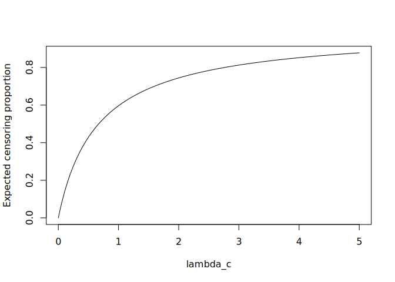

Analytical Censoring Parameter Determination
Calculations for the expected censoring proportion under independent censoring to determine a censoring distribution parameter that achieves a target censoring proportion in simulation studies. The expected censoring proportion is evaluated by numerical integration over time and covariates, with support for administrative censoring and accrual periods.
The documentation is available at https://iden-project-uas-darmstadt.github.io/CensRCalc/
Installation
You can install the development version of CensRCalc like so:
# With remotes
remotes::install_github("IDEN-Project-UAS-Darmstadt/CensRCalc")
# With pak (recommended for speed)
pak::pkg_install("IDEN-Project-UAS-Darmstadt/CensRCalc")Releases of the library can be found here.
Examples
This package provides functions to estimate the parameter of the random censoring distribution based on a given event time distribution and covariate distributions.
library(CensRCalc)
event_rate <- function(x, trt) exp(-0.5 + 0.3 * x + 0.2 * trt)
event_surv <- function(t, x, trt) 1 - pexp(t, rate = event_rate(x, trt))
cov_dens <- function(x, trt) dnorm(x, mean = 0, sd = 1) * 1 / 2
cov_bounds <- list(x = c(-Inf, Inf), trt = list(0, 1))
# Default is a exponential censoring distribution
estimator <- estimate_cens_prop(event_surv, cov_dens, cov_bounds)
# We can now estimate the censoring prop. with different lambda_c values
sapply(c(0.5, 0.7), estimator)
#> [1] 0.4289339 0.5105715
print(estimator)
#> <Expected censoring proportion function>
#> Target parameter : lambda_c
#> Target range : 1e-05 - 5
#> Administrative censoring: Inf
#> Accrual period : 0
plot(estimator)
We can also find a lambda_c that results in a desired censoring proportion.
progressr::with_progress({ # Progress bar is optional
lambda_c_50 <- find_cens_param(0.5, event_surv, cov_dens, cov_bounds)
print(lambda_c_50)
})
#> $parameter
#> [1] 0.6703201
#>
#> $cens_prop
#> [1] 0.5Development
This package comes with a Devcontainer that can be used to develop the package in a reproducible environment.
Use anything available in the devtools package to develop the package.
library(devtools)
document() # to update documentation and roxygen functionality
load_all() # to load the package functions for development
build_readme() # to update the README
build_vignettes() # to build the vignettes (deprecated, but still works)
build_site() # to build the pkgdown site
build_manual(path=".") # to build the PDF manual
test() # to run tests
check() # to check the package
covr::package_coverage() # to check code coverage
print(covr::report(browse=F))
styler::style_pkg() # to style the code
lint() # to check the code for linting issuesReleasing a new version
Releases and pre-releases are managed automatically via GitHub Actions whenever changes are pushed to main or dev.
To publish a new official release:
-
Prepare on
dev: Update the version number inDESCRIPTION(e.g.,0.2.0) and document all changes inNEWS.mdunder a corresponding version heading. -
Rebuild README: Run
devtools::build_readme()to reflect any changes. -
Merge to
main: Open a Pull Request fromdevtomainand merge it after checks pass. -
Automated Pipeline: The
release.yamlworkflow triggers on push tomainand will:- Execute package checks and build the package.
- Generate the package tarball (
.tar.gz) and LaTeX PDF Manual (art/Manual.pdf). - Tag the commit (e.g.,
v0.2.0) and extract release notes fromNEWS.md. - Publish a new GitHub Release with attached build assets.
-
Reset
dev: Switch back todevand bump to a development version: